1. NCTP SAC identification procedure
The NCTP records the attended-observation procedure for identifying Special Audible Characteristics, including night-time observations and informative observations near the turbines.
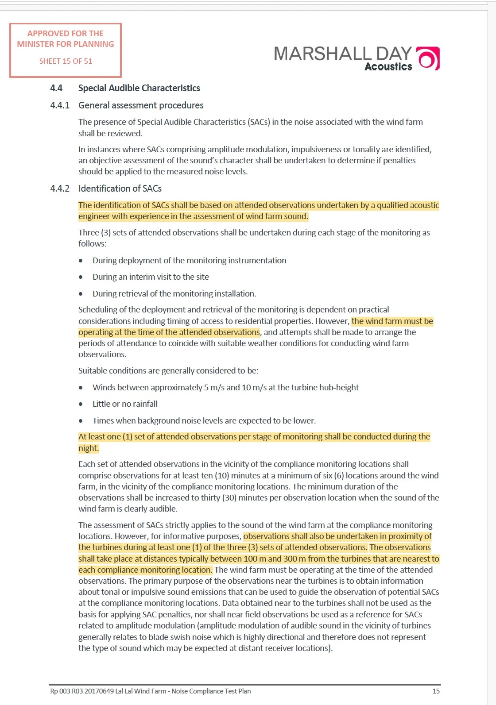
The assessment of Special Audible Characteristics (SAC) forms a mandatory component of the endorsed Noise Compliance Testing Plan (NCTP) and the assessment framework established by NZS 6808:2010. This page traces the attended observation and reporting record.
This page should be read after the Start Here, Glossary, Understanding the Record, Framework and Verification pages.
It applies the repository method to one issue: the relationship between the approved Noise Compliance Testing Plan, Special Audible Characteristics, attended listening observations, disclosed appendices and the documentary chronology.
Special Audible Characteristics, often shortened to SACs, are distinctive features of wind farm sound, such as tonality, impulsiveness or modulation, that may make a sound more noticeable or intrusive than ordinary broadband sound.
This page does not determine whether SACs were or were not present. It explains the approved observation procedure and reproduces the documentary record showing how attended listening observations were reported.
The approved NCTP required attended observations by a qualified acoustic engineer experienced in wind farm sound.
SAC identification was not only a meter-based exercise. The NCTP required listening observations and reporting of those observations.
The key record is found in the approved NCTP, Stage 1 Elaine report, Stage 2 report and disclosed attended-observation appendices.
The endorsed Noise Compliance Testing Plan identifies when attended listening observations are required, where they are to be undertaken and how they form part of the mandatory methodology for assessing Special Audible Characteristics.
The approved Noise Compliance Test Plan set out how SACs were to be identified and reported. The extracts below are included so readers can compare the approved procedure with the observations reproduced in later compliance reports.
The NCTP records the attended-observation procedure for identifying Special Audible Characteristics, including night-time observations and informative observations near the turbines.

The NCTP required compliance reports to include full details of attended observations conducted for the purpose of identifying where SACs were potentially present in the sound of the wind farm.
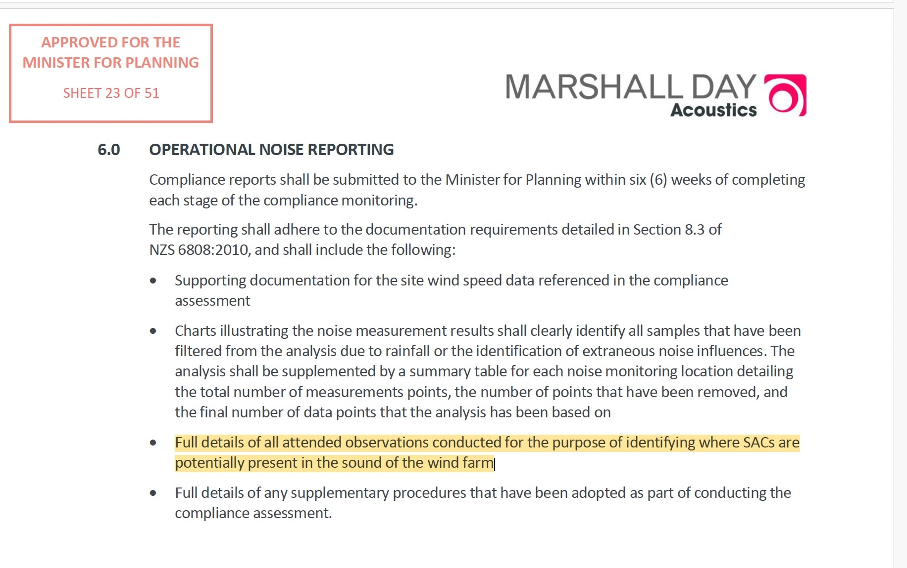
The map below is reproduced from Lal Lal Wind Farm documentation and annotated for explanatory purposes. It is not redrawn. The annotations assist readers to understand the relationship between the attended listening observations, compliance monitoring locations and nearest turbines.
Green arrows identify the nearest turbines associated with each compliance monitoring location and Location 4. The orange arrow illustrates the approximate distance between H18aa and the Midland Highway, where one attended observation was recorded as “H18aa – Midland Hwy”.
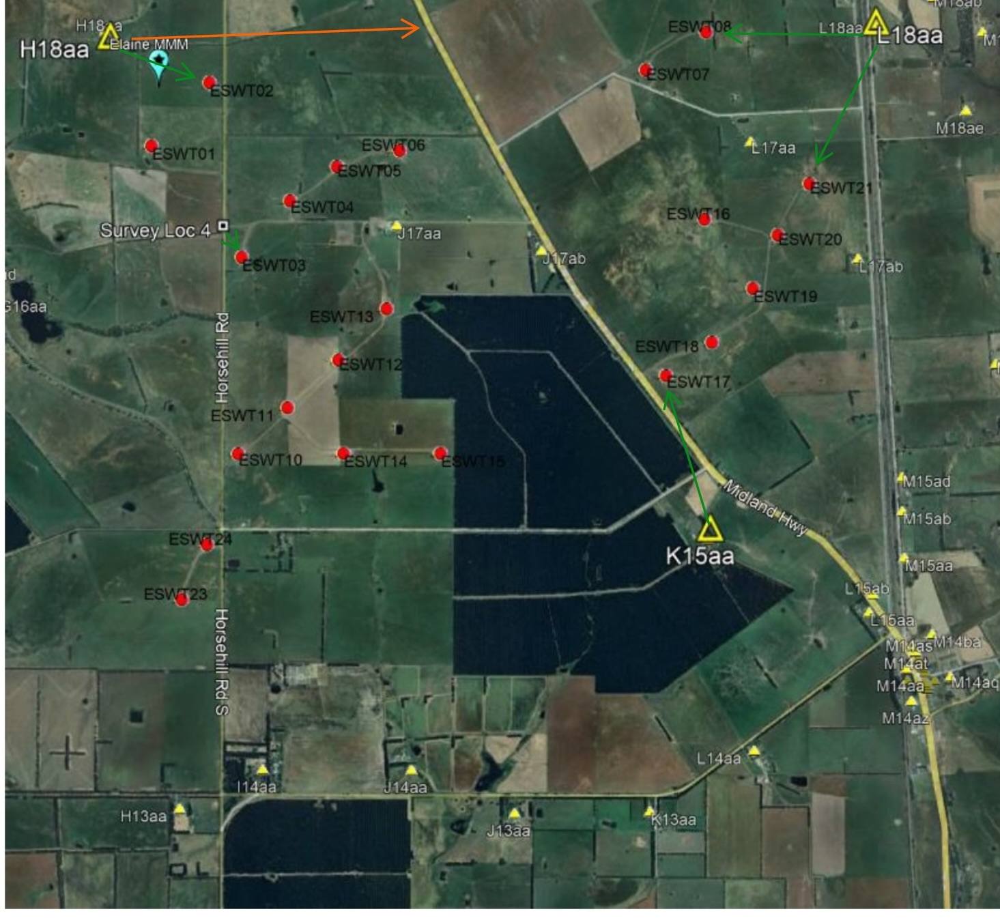
The Stage 1 Elaine report records unattended compliance monitoring at K15aa, H18aa and L18aa between 9 March 2021 and 13 May 2021. Appendix D then reproduces attended listening observations dated 9 March 2021, 10 March 2021, 31 March 2021 and 11 June 2021. The reproduced records group the observations into daytime periods in March, with a further set dated 11 June 2021.
The reproduced Stage 1 Appendix D records for the Elaine compliance monitoring locations show attended observations grouped on 9 March 2021, 10 March 2021, 31 March 2021 and 11 June 2021.
The records reproduced on this page do not show an attended listening observation dated during April or May 2021, and do not show a night-time attended observation set for the Elaine compliance monitoring locations. This page records the documentary chronology only.
During the public information session, SLR described attended listening as a process of listening to the wind farm at different times of the day and in different conditions, and described that process as a gateway to further objective analysis where a particular sound character was heard.
The same information session also stated that some surveys were conducted but were not documented in the report because, after the fact, SLR determined that the wind farm was not producing electricity and elected not to count those surveys. This page places that explanation alongside the Appendix D records reproduced in the Stage 1 report.
Table 3 of the Stage 1 report records the monitoring period for K15aa, H18aa and L18aa as 9 March 2021 to 13 May 2021, with approximately 54 days of monitoring.
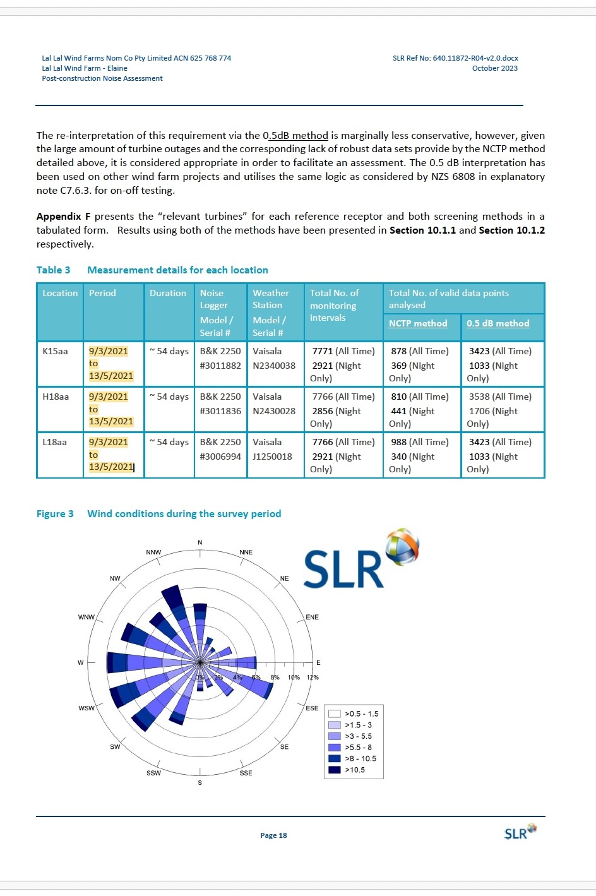
Appendix D includes an observation recorded as “H18aa – Midland Hwy” on 10 March 2021. The map above is included to assist readers in understanding the geographical relationship between H18aa and the Midland Highway reference.
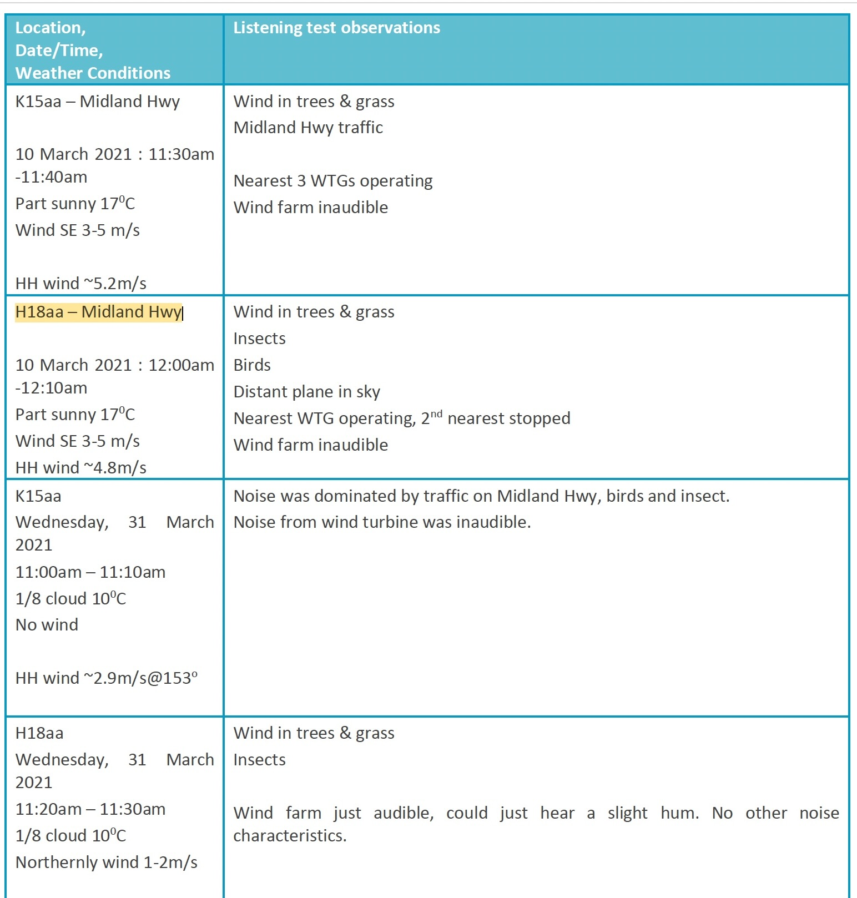
The extracts below reproduce the grouped Stage 1 Appendix D attended observations for K15aa, H18aa and L18aa. They show daytime observation groupings on 9 March, 10 March and 31 March 2021.

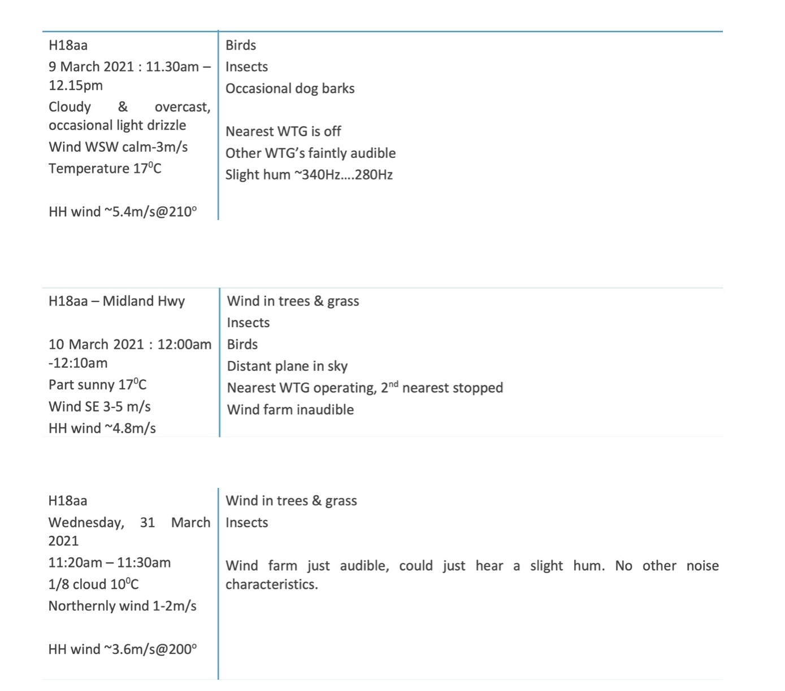
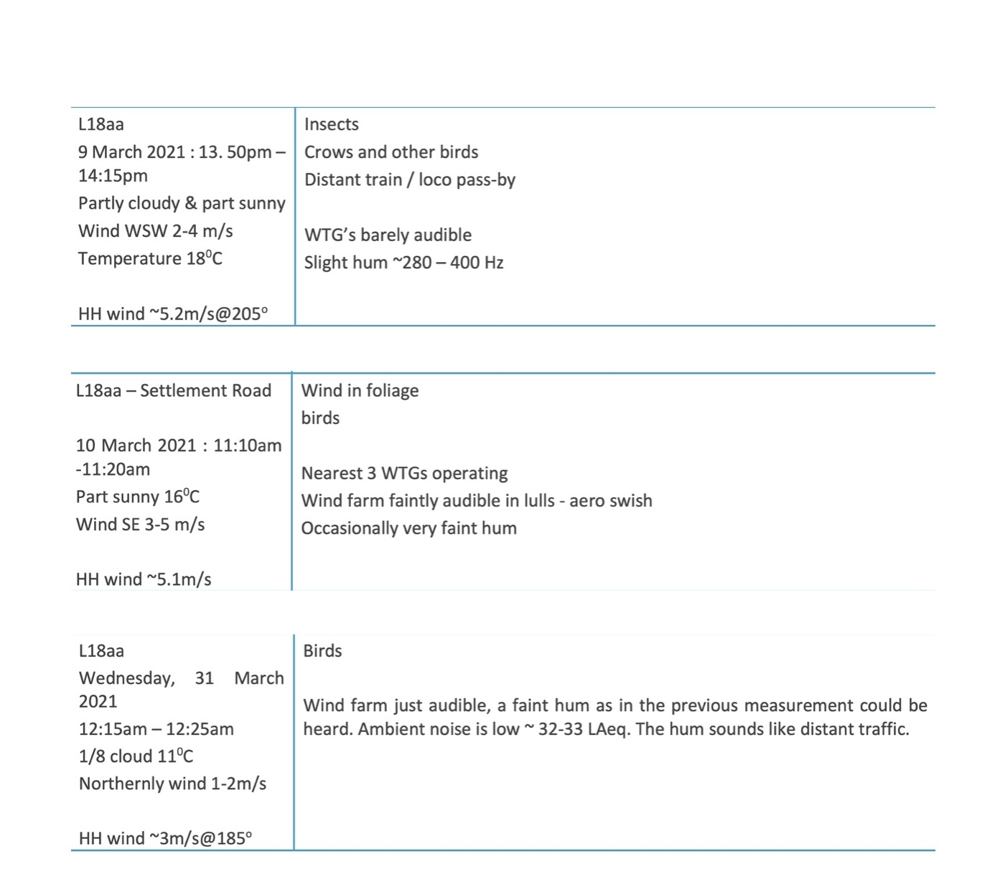
Appendix D also includes observations dated 11 June 2021. Those observations appear after the monitoring period recorded in Table 3 as ending on 13 May 2021. This page records the chronology only and does not infer the reason for that timing.
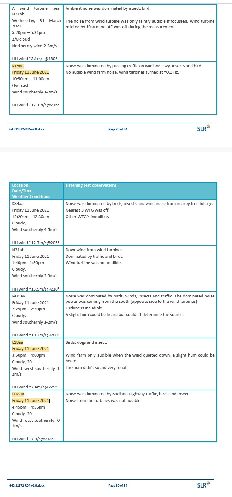
The Stage 2 material records extended monitoring at some locations into January 2024 and includes additional locations not used as the original Elaine compliance monitoring locations, including J14aa, L14aa and Elaine Intermediate. This page records those locations as they appear in the disclosed documentary material.
Table 6 records monitoring periods for locations including N31ab and M29aa extending into January 2024, while other Elaine locations are recorded for March to May / June 2023 periods.
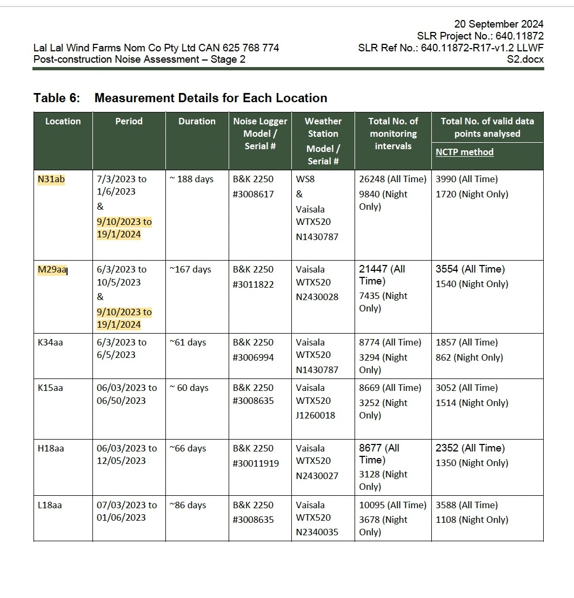
The image below reproduces the final page of the disclosed Stage 2 attended-observation appendix. The final attended observations reproduced in the appendix are dated 1 June 2023. This image is included to identify the documentary endpoint of the disclosed attended observation record.
Documentary chronology: Table 6 above records monitoring continuing beyond 1 June 2023 for some locations, including the extended monitoring periods highlighted for N31ab and M29aa. The disclosed attended-observation appendix reproduced in the report concludes with observations dated 1 June 2023. This page records that documentary chronology only.
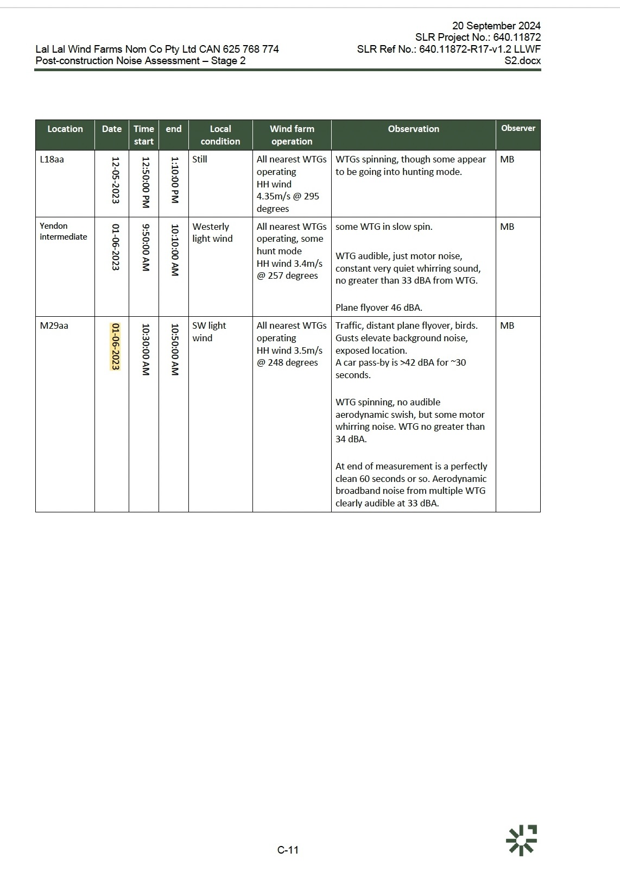
The Stage 2 attended-observation extract records an observation at Elaine Intermediate and includes the note: “Found a frog on the logger when arrived.” This is recorded here only as a documentary fact from the Stage 2 report.
The approximate location of Elaine Intermediate is shown below using the later On / Off Testing report solely as a map reference for the named location. The On / Off report is not otherwise relied upon in this section.
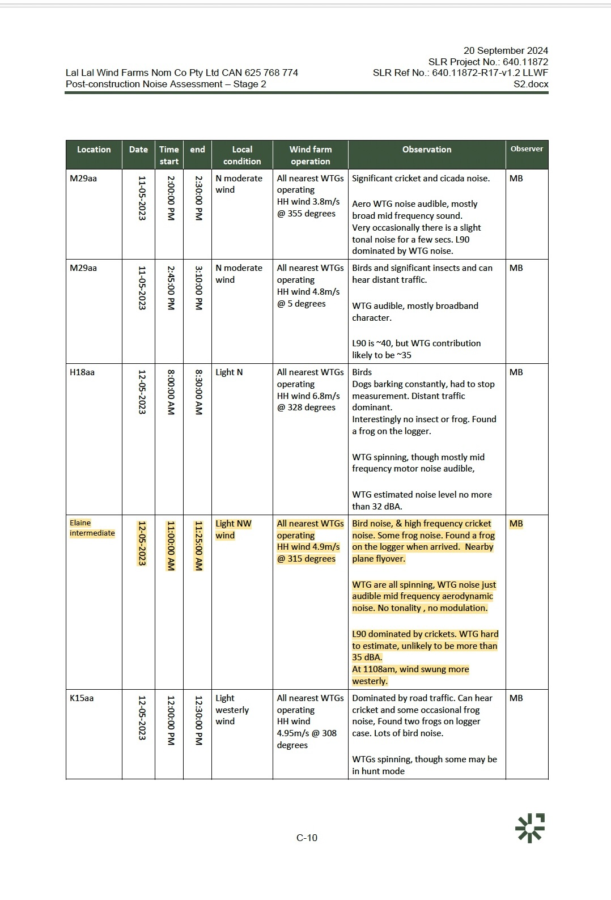
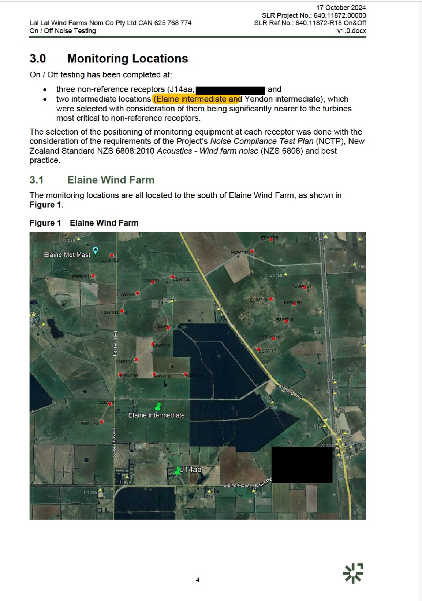
The NCTP required compliance reports to include full details of any supplementary procedures adopted as part of conducting the compliance assessment.
The Environment Protection Amendment (Wind Turbine Noise) Regulations 2022 distinguish alternative monitoring points from post-construction noise assessments. This extract is included only to orient readers to the regulatory wording.
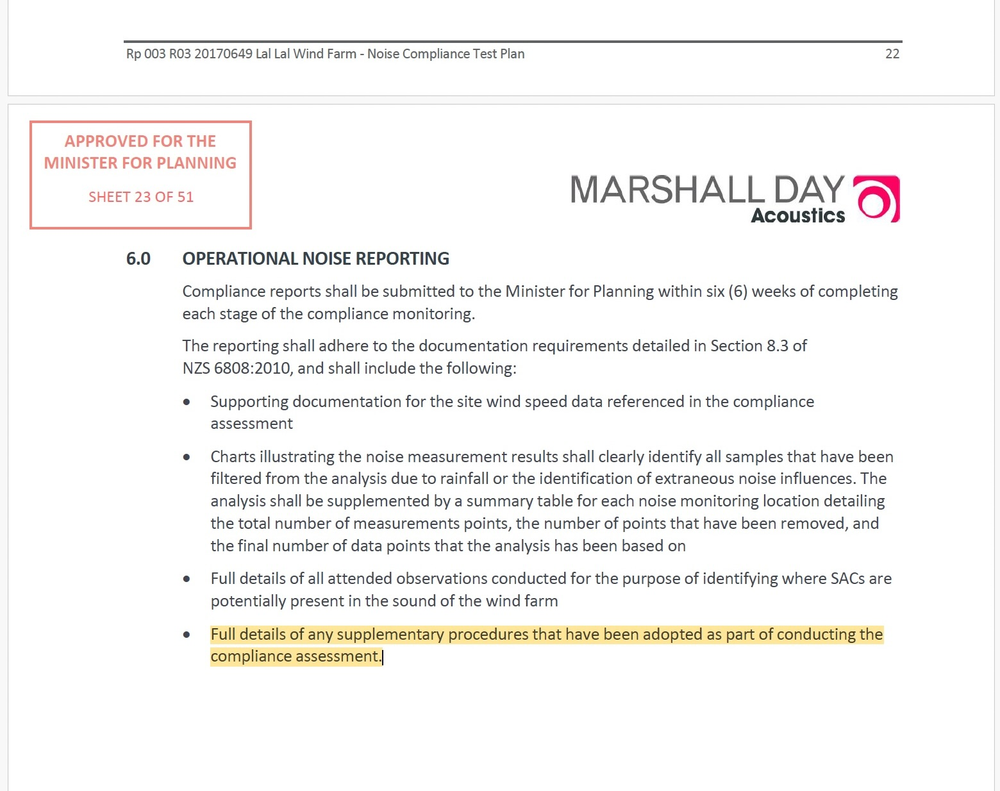
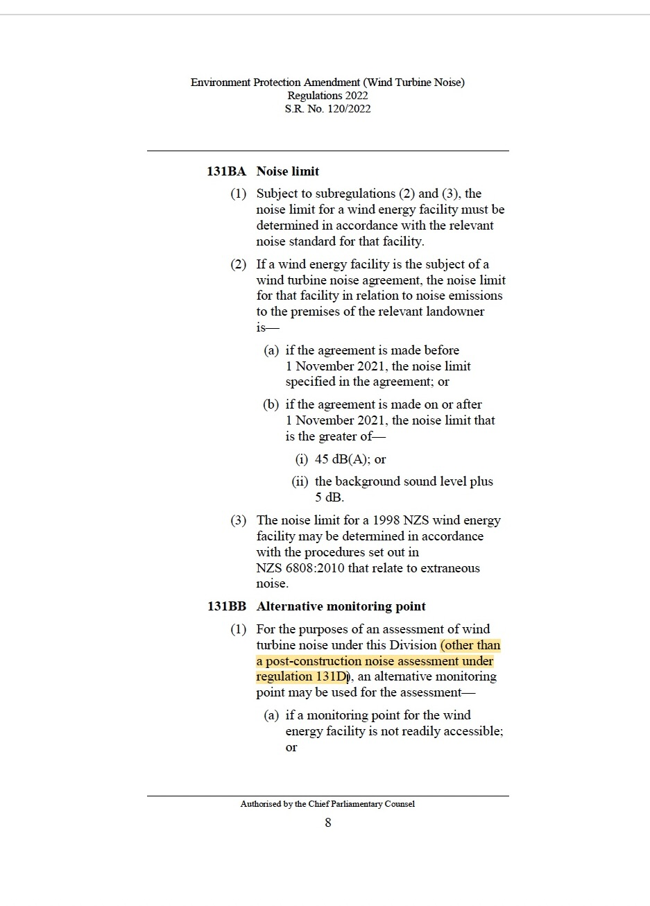
During the SLR Public Information Session, SLR responded to a question concerning the attended observations undertaken on 10 March 2021 and 31 March 2021 and their relationship to the AEMO operational record.
This annotated figure compares the attended listening times reproduced in the Stage 1 post-construction report with the publicly available wind energy production record for 31 March 2021. It is included as an analytical aid and should be read together with SLR's public explanation above concerning the likely daylight saving time difference and low-level turbine operation.

Verification question: Does the disclosed documentary record enable readers to verify that the mandatory Special Audible Characteristic assessment requirements of the Noise Compliance Testing Plan were undertaken and documented in accordance with the endorsed methodology?
| Issue | Stage 1 Elaine report | Stage 2 report |
|---|---|---|
| Monitoring period | Recorded for K15aa, H18aa and L18aa from 9 March 2021 to 13 May 2021. | Recorded for multiple locations, including N31ab and M29aa extending into January 2024. |
| Attended observations | Appendix D reproduces attended observations including K15aa, H18aa, L18aa, near-turbine locations and other locations. | Appendix material reproduces selected attended observations including M29aa, H18aa, Elaine Intermediate and K15aa. |
| Additional / intermediate locations | Includes observations outside the three Elaine compliance monitoring locations, including Yendon observations. | Introduces additional locations including J14aa, L14aa and Elaine Intermediate. |
| Geographical context | Annotated map assists readers to understand the H18aa Midland Highway reference and nearest-turbine observations. | Later On / Off report map is used solely to identify the approximate Elaine Intermediate location. |
This page reproduces and explains the documentary record relating to Special Audible Characteristics. It assists readers in understanding the approved Noise Compliance Test Plan, the attended listening observations reproduced within the disclosed reports, and the chronology of those documents.
The page is intended as an explanatory guide to the documentary record. It does not seek to draw conclusions beyond the documents reproduced and described.
This page is a guide. The detailed record remains in the executed documents and source material.
Unlike sound level measurements alone, the assessment of Special Audible Characteristics requires attended observations because some sound characteristics are initially identified through listening before any further objective assessment is undertaken where necessary.